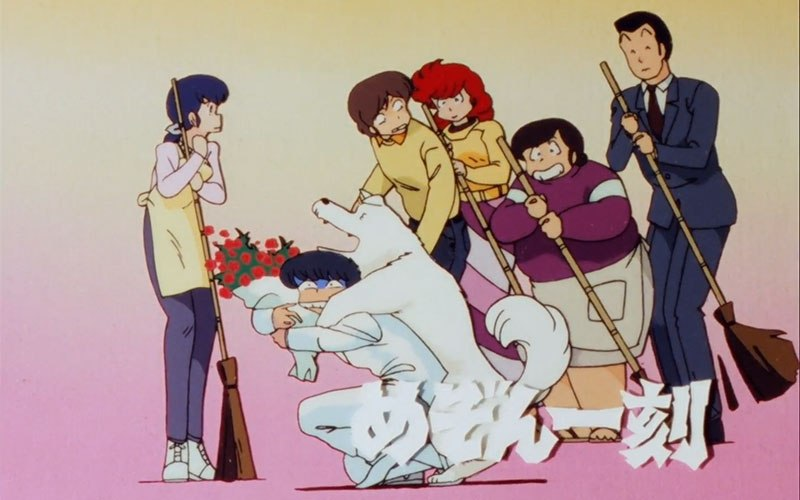

Alors, de quoi dois-je vous parler aujourd’hui moi… (consultation du fichier)… Les écarts entre l’image de la société japonaise vue par les manga et la réalité… Mouais… Guère encourageant à presque minuit mais bon je vais essayer de produire un semblant de quelque chose (mais d’abord un bon café…) C’est bon! Z’êtes près? Je vais vous montrer que les D.A et les manga dits “réalistes” ne nous dépeignent pas la vie japonaise telle que la vivent les vrais japonais pur beurre, euh… pur sushi (un peu comme Hélène et les garçons chez nous… un chouia minuscule alors).

Avant tout, je précise comme d’hab’ que ce que je dit, je le tiens de mes recherches, de ma propre interprétation, mais qu’en aucun cas je n’ai été vérifier sur place que c’était vrai ou que ça l’a été (ce qui sous-entend que je peux me planter méchamment et que tout l’article soit un ramassis de bêtises, c’est ça l’aventure). Je vais me baser sur des exemples de séries bien connues dont l’action se situe au Japon: City Hunter, Maison Hikkoku, Video Girl Aï, Kimagure Orange Road, Tokyo Babylon. En effet, il y a des situations qui chez nous sont banales ou allant de soi, tandis qu’elles sont inhabituelles au Japon, mais les exemples vont vous éclairer.
Niche à vendre
L’écart le plus important et le plus visible se trouve dans la taille des logements. Dans la vie courante (en ville s’entend), une famille moyenne possède un K2R (Kitchen-2 Room) Ce qui juste suffisant pour une famille de trois personnes, mais comme partout dans les pays industrialisés, ils ont tendance à être quatre, ce qui pose problème, sans compter la taille des pièces, qui n’a rien à voir avec nos spacieux HLM. Or, Ryo et Kaori ont un immeuble à eux, Yota a une maison pour lui tout seul, Kyosuke/Max a une maison spacieuse ou chacun a sa chambre, seul Yusaku/Hugo est obligé de vivre dans une chambre. Pour résoudre ces problèmes de place, les japonais dorment à même le sol et rangent leur lit au matin afin de disposer du maximum de place pendant la journée. Mais Ryo, Yota et Kyosuke ont des lits en dur, seul Yusaku se démarque encore en dormant par terre. Cela pose aussi le problème de l’intimité (des parents, mais aussi des adolescents) C’est pourquoi les love-hotels sont fréquemment utilisés au Japon. Nous, occidentaux avons souvent suffisamment d’espace pour vivre sans se marcher sur les pieds, c’est pourquoi les situations où vivent les protagonistes correspond à ce que nous connaissons et ne constitue donc pas un idéal de vie.
Singing in the rain
Dans les anime, le bain à une place primordiale. Ce moment est souvent utilisé dans pour des situations comiques, comme dans City Hunter, Ranma 1/2.. Il peut aussi faire avancer l’intrigue entre deux personnages qui sont destinés à s’aimer (vous savez, le gars rentre dans la douche alors que la fille y est, nue ou vice versa). C’est aussi le moment idéal pour se détendre et réfléchir un peu. On peut aussi le prendre en famille et rigoler un coup (Totoro). Bref, on est loin des fonctions strictement hygiéniques que nous lui attribuons par chez nous. Lorsqu’on prend une douche le matin c’est plutôt pour se donner un coup de fouet que pour se détendre. Au japon c’est l’inverse: on remplit la baignoire d’eau chaude, on se lave à l’extérieur du bain, et c’est seulement quand on est tout beau tout propre qu’on a le droit de se prélasser dans la baignoire. Mais attention! l’ordre de passage est hiérarchique: le mâle le plus âgé de la famille passe en premier, puis les héritiers, et enfin quand l’eau commence à être crade et froide, c’est au tour des femmes (dans Video Girl Aï, Moemi ne prend pas son bain pour laisser l’eau propre à Yota. Touchant non? vieux jeu sûrement!). Enfin, les japonais se lavent aussi hors de chez eux. Quand ils n’ont pas de baignoire tout d’abord, et pour changer d’air aussi. Pour ça il y a les bains publiques (utilisés par Yusaku dans Maison Ikkoku, prisés par Happosaï dans Ranma 1/2). Le lieux de relaxation ultime reste quand même les sources chaudes. Imaginez, prendre un grand bain en plein air, dans un cadre montagneux sublime et une eau qui reste à température 24h/24. Le pied pour une petite sieste! (“gloub”).
Yukiko! Une bière!
Si, en France, les femmes peinent à devenir l’égal de l’homme (elles rêvent éveillées ma parole !) C’est encore pire au Japon. Du moins tel était le cas au moment où existaient les séries dont je me sert comme exemple. La situation a sans doute évolué depuis. A l’époque (il y a dix ans), il y avait deux visages de femmes au Japon: les jeunes femmes de moins de 25 ans, libres, célibataires, épanouies, en activité… et les femmes de plus de 25 ans, mariées, un ou deux enfants, et… sans emploi. L’émancipation des femmes japonaises a en effet été stoppé net par le mariage traditionnel qui veut qu’une femme cesse toute activité pour se consacrer à son ménage quand elle se marie (la bouffe, les couches, la lessive, le mari qui rentre bourré à minuit… La joie quoi !). Du coup les filles vont autant à l’école que les garçons, ont parfois la chance d’exercer un métier pendant 4-5 ans et puis s’ensuit une période de 30 ans à s’occuper des marmots. Quel gachis mes amis. C’est pourquoi il n’y a que de jeunes et jolies japonaises dans la rue, les magasins, comme secrétaire, hôtesse… En gros, si une fille veut faire carrière, elle ne doit pas se marier (il y a quand même des exceptions: Akemi Takada (Character Designer sur Kimagure Orange Road, Patlabor), mariée à Kazunori Ito (scénariste de Patlabor) continue d’exercer sa profession (ouf! On a eu chaud !). Maintenant, essayez de me trouver une femme qui bosse et qui est mariée en même temps. Ceci expliquant cela, vous comprendrez maintenant pourquoi dans City Hunter tout le monde pense que Kaori et Ryo sont mariés, étant donné qu’ils vivent sous le même toit. Chose très mal vue au Japon, mais courante chez nous. C’est aussi la raison pour laquelle Saeko refuse les prétendants que lui choisis son père. Si elle se marie elle perd son poste dans la police, CQFD. Il faut aussi noter la forte proportion de femmes fortes comme Kaori, Video Girl Aï, Saeko, Akane, Madoka, Ran (Conan), les Cat’s Eye. Toutes ses femmes sont sûr d’elles, insoumises voir dominantes. Elles représentent ce que devraient être les femmes pour affronter les hommes et leur machisme ancestral (c’est moi qui dit ça ?).
Vroum vroum playstation
Si les embouteillages font parti du décor urbain des séries, il est curieux de constater que nos héros préférés boudent la petite tuture pour se déplacer majoritairement en métro/train. Mis à part Ryo, tout le monde est à patte. Soucis d’écologisme, peur des embouteillages ? Peut-être, mais pas seulement. Il faut savoir qu’au Japon, les conditions de conduite sont bien plus draconniennes qu’ici. Une fois passé le permis, il faut faire un contrôle technique de la voiture tous les 2 ans, une visite médicale tous les 3 ans et repasser le permis tous les 5 ans (ou un peu plus) Sans compter la difficulté à trouver un garage, une place de parking… Pourtant beaucoup de Japonais ont leur permis. Mais la plupart sont des conducteurs “sur le papier”.
Mickey a les yeux bridés
Vous iriez à Eurodisney tous les ans, vous? Et bien les japonais oui! Et ce n’est pas les 34 millions de visiteurs de Disneyland Japon qui me contredirons. Les japonais vont dans les parcs d’attractions aussi couramment que nous allons au cinéma. C’est dire! Du coup cela se reflète aussi dans les anime.
Aliments pour chien
Allez, un dernier paragraphe pour la route, et il n’est pas tout jeune (ahahah!). Non, soyons sérieux, le problème du vieillissement de la population est préoccupant au Japon, mais reste peu abordé dans les mangas et anime. A part Roujin Z qui propose une vision comique du futur “vieux”. A citer aussi, une petite histoire de Tokyo Babylon où un grand-père se suicide: il empêchait les enfants d’avoir chacun leurs chambre. Selon la tradition, les grands-parents sont censés rester chauffer leurs vieux os chez leur progéniture (masculine uniquement, d’où la nécessité d’avoir un fils pour assurer sa “retraite”). Mais avec l’exiguïté des logements, le lien a été brisé et les vieux sont devenus indésirables (comme partout). Logeant souvent seuls et oubliés de tous, ils doivent tenter de survivre dans cette jungle urbaine qui les a oubliés (‘tention, nous aussi on va être vieux).
Je tiens à remercier tous ceux qui ont survécu à la lecture de cet article analytique et quelque peu rébarbatif. Quoi qu’il en soit, j’espère qu’il aura éclairé votre lanterne sur les comportements et les mœurs japonais. J’essaierai de compléter, améliorer et enrichir ces explications au fur et à mesure… Mais je garantie rien. Merci de votre persévérance.